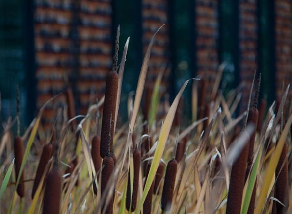

2019 - heute
HTML/CSS/JS
Wir haben im zweiten Semester einen eigenen Shop kreiert um HTML/CSS/JS zu lernen.
Shop PrototypBlender
Fotografie


Hi, ich bin Violetta Pyralov, studiere momentan Medieninformatik im zweiten Semester an der Hochschule in Furtwangen.
Zu meinen Hobbies gehören fotografieren, zeichnen, schwimmen. Bildbearbeitung sollte nicht zu kurz kommen, hierfür verwende ich Photoshop und Lightroom.
Am meisten interessiert mich die Cosplay-Fotografie.
Momentan leider schlecht möglich, aber dennoch reise ich sehr gerne. Und kann mir gut vorstellen, ein Auslandssemester einzulegen.
2019 - heute
2017 - 2019
2015 - 2017
2013 - 2015
2008 - 2013
Wir haben im zweiten Semester einen eigenen Shop kreiert um HTML/CSS/JS zu lernen.
Shop Prototyp